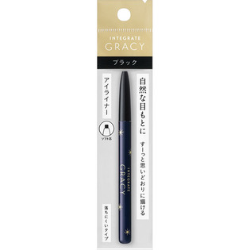
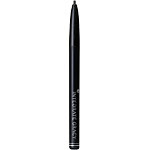

返回列表
产品名称：インテグレート グレイシィ くり出しアイライナー

資生堂 インテグレート グレイシィ くり出しアイライナー ＢＫ９９９
メーカー 資生堂
JANコード 4901872355389
商品の特徴
ソフト芯でよれずに描ける
落ちにくいタイプ
成分・分量
-
用法及び用量
＜使用方法＞
●2mm程度芯をくり出し、まつ毛の生えぎわにそって少しずつ軽いタッチで描きます。
●使いはじめは、描きやすいように手の甲などで芯先をならし整えてからご使用することをおすすめします。